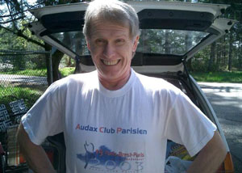

Volume 9 Issue 2 - March/April 2004
2004 SIR Brevet Schedule
Apology to the Club
Traffic Laws and SIR
The Pieper Family Populaire
The Terrifying Hills of Tahuya
Fleche for Fantasy
Flèche Northwest Results
Road Snippets

NOTE: Please send any equipment reviews, PBP insight or ride reports for the May/June newsletter to Jon Muellner! I know most of you can write so let's generate some copy folks! Thanks to everyone who contributed to this issue!
For those of you on-line, join in the SIR email list! It's a great way to share info, ride schedules, car-pooling to events and training with other SIR members. To get on go to http://www.phred.org/mailman/listinfo/sir. It's easy!
SIR Volunteer Thanks
Thanks to all the volunteers for Bike Expo in March: Don Smith, Jon Muellner, Paul Johnson, Robin and Amy Pieper, Bill Dusler and Kent Peterson. Thanks to Mark Thomas and Jon Canning at Samammish Valley Cycle for giving us the space. We handed out SIR wallet cards, Robin Piepers excellent SIR Posters (both with the ride calendar on them). It was a great show! Big thanks also to those who have helped out on brevets so far!
SIR members wishing to help out on any of the brevets, please contact the organizer directly and offer your support. The brevet series takes time and will be easier if we all pitch in! Thanks!
| Date | Distance | Organizer | Route |
|---|---|---|---|
| May 8-9 | 400 km | Bill Dussler | North Bend, Snoqualmie Pass, Blewitt Pass, Stevens Pass, Snoqualmie Valley, Carnation, Fall City, Snoqualmie Falls. |
| May 22 | 100 km Populaire | Mark Van de Kamp, Jan Heine | Unpaved Populaire (non-RUSA event). This ride is on gravel roads on the tree farm north of Fall City. These are smooth gravel roads, no technical off-road terrain. 28 mm tires minimum, but you'll be happier on 35 mm. No technical terrain, no mountain bikes required. |
| June 5-6 | 600 km | Jon Muellner | North Cascades starting in Arlington; depending on Hwy 20 road repair |
| June 25-27 | Mark Thomas | Carson/Ephrata (same as 2003) | |
| July 10 | Dave Read, Paul Johnson, Brian List | ||
| July 24 | Dave Read, Paul Johnson, Brian List | ||
| August 14 | Robin and Amy Pieper | ||
| September 4-5 | Owen Richards | ||
| September 19 | Jan Heine | The ever-popular Mtn. 100k. Same course as this year, unless more roads vanish in the 'burbs. | |
| September 25-26 | Wayne Methner |
By Jan Heine
Ken Bonner and I (Jan Heine) were reprimanded by the SIR Board for "rolling through a red light" at 7:30 a.m. during the Spring 2004 - 200 km brevet. In a formal e-mail, we were issued a warning and threatened with "a time penalty, disqualification, or exclusion from future events" for future infractions. We were asked to apologize to the club for "riding unsafely and in violation of our rules and therefore [setting] a poor example for new riders in our growing club."From past experience, we knew that the light in question was not triggered by bicycles. After stopping briefly, we treated the light as a stop sign, as proscribed by WA State Traffic Law: "SMC 11.50.230: Stop at nonoperating traffic signal." There was no other traffic in any direction at this intersection, so we proceeded. We felt that this was both safe and legal, thus in accordance with the published SIR rules. Witnesses reported that after we proceeded, the light did not change for several minutes until somebody rode onto the sidewalk and pressed the pedestrian button.
The SIR Board rejected this explanation and upheld the warning. Because of this, Ken Bonner decided to leave SIR and will not ride with the club in the future. This is the third experienced rider I personally know who has left SIR in the past 14 months because disputes over enforcement of SIR rules.
I love randonneuring, I like the people in the club, and I enjoy riding with SIR. I want to be able to participate in future SIR events. Therefore, I hereby apologize to the entire club and especially to those who may have been harmed or endangered by my treating the malfunctioning light as a stop sign. I apologize if anybody got the false impression that I generally advocate ignoring red lights.
The SIR Board also requested that I submit a letter on safe randonneuring to the newsletter. However, I do not believe I am qualified to do so, and hope this part of the requirement will be waived.
At the 200 km brevet the board was faced with posing a response to illegal traffic behavior by some of the riders. As this issue had never been addressed before (though other safety issues have), we had to proceed to the best of our collective abilities.The situation was that two riders were at a stop light and when it did not trigger for them they rode through it after assessing the risk. Unfortunately, as the light was functioning and could be triggered with the pedestrian button, this constituted a safety concern in that one, it was a busy intersection and two, had other riders with less experience with that intersection followed through assuming the crossing was safe, it may have precipitated a serious accident.
Before any action was taken, the board contacted both the Seattle Police and the Kent Police to clarify the law and determine what the proper course of action for a cyclist in these situations.
Sgt. Brain Jones of the Kent Police Dept. stated that technically and according to the law as written, the light was functioning (both the ped crossing and auto triggering worked) and a cyclist has to wait for another vehicle to trigger the light or become a pedestrian and use the crosswalk. If the cyclist had gone through the red light (believing it was malfunctioning), and caused a collision, the courts and officers on the scene would consider the cyclist at fault.
In practice, to the cyclist, the light seems to be malfunctioning, but there is currently no provision in the law to account for this. If a cyclist was stopped by an officer for running a red light, it would be at their discretion whether to issue a ticket. Legally it is an infraction. He said that different jurisdictions and personalities may handle the case differently, but in an accident, they'd all base facts on the written law. (This issue is also a concern for motorcyclists and they are faced with the same light triggering problem).
The board's concerns were based on a few items. Being the first brevet of the season, there are many new riders looking for role models and input on the sport. We are blessed with some very fine veteran randonneurs like Jan and Ken who many look to for their wealth of experience and willingness to share it. With the explosive growth of this club in the past few years we are often faced with not only new riders learning the ropes about randonneuring in general, but learning the routes and roads we use. The State of Washington has begun imposing some severe restrictions on cycling events, even causing the cancellation of a few and SIR cannot afford to lose our access to the areas we utilize. Traffic volume in the urban and suburban areas is rising and safety is becoming more important.
Running a red light is illegal and unsafe. That is the only basis we can go on. It also creates the perception of "lawless bikers" in the eyes of motorists that may see us running the light when it is most definitely red for them. To other road users we must follow the law even if it is inconvenient. Our respect on the road and club liability would be based on the law. Common sense would dictate that we take care in not only how we believe we should act, but also how we are perceived by our fellow cyclists and other road users. In this case, only warnings were issued and not time penalties or disqualification, so that we could make a firm statement that safety is paramount, but we also understand the nature of being a cyclist in a car-centric world. We have always attempted to be measured and proportional in our responses to these issues. We have taken more serious action in connection with more serious violations. We have, for example, disqualified a rider for failure to wear a helmet on a brevet. Although we lost a rider as a result of that action, the board believed that penalty to be justified.
We are pleased that Jan has stayed with SIR and already it has brought forth a better awareness in the club of the tenuous balance we all face when sharing the road with motor vehicles. Jan is a valuable SIR member and has provided years of experience to many new riders, and we are happy to know that will continue. We are sorry that Ken responded to the warning by leaving SIR, but we respect his choice.
This club is run entirely by volunteers who spend a great deal of time to keep everything functioning. While it is not perfect, those involved try and fulfill their roles in the best possible manner. It was demonstrative to see the care and effort all nine board members took to address this issue. Many hours were spent in an effort to take action where none had been taken before. We have also learned from this experience and it will hopefully provide for more efficient policy action in the future.
Jan's letter requirement has been waived and we appreciate his note for this newsletter.
SIR Board
By Amy Pieper
Robin's mom, Faye, was scheduled to visit from Nevada and pick up her new super light Seven bicycle at the beginning of March so we decided what better way to test it out then on the SIR 100k Populaire on March 6. Faye and Wes are "desert rats" and were a little leery of joining us for a 65-mile ride in early March but we assured them the weather is always good for the Populaire. As the date approached the weather forecasts were not encouraging and we thought we might have a mutiny on our hands. The bike was picked up from BI Cycles on Friday, we outfitted the trusty Ibis for Wes, I cleaned off the Rambouillet that had gotten quite smudged on Terry Z's last training ride, and Robin did the same with his Waterford. We showed up the morning of the ride with 4 eager riders. Well, some were eager and some were cautiously watching the cloudy sky.We had given Wes and Faye an outline of the route assuring them that there weren't many hills and only 1 lengthy climb up to Snoqualmie Falls. When we got to the start to discover the route had been revised all bets were off. We wanted to ride together so we started off at the back of the pack and that is where we stayed the rest of the day. The long first climb broke the group up quite a bit and many of our faster friends would not be seen again. A very unlucky but patient cement truck got caught behind us and had a very long slog up that hill! At the top there was a group of workers anxiously waiting for the cement delivery at a driveway just off the road.
Wes had looked at the cue sheet and declared that the ride must all be in the city as there were so many turns and no long stretches along the same road. I guess he wasn't familiar with the SIR brevet rule that the shorter the brevet, the longer the cue sheet. Also, being used to riding in Nevada he didn't realize how many paved roads we have to choose from up here! We enjoyed the familiar route to Carnation and then struck out into some unknown territory. Tom Lawrence was everywhere! He did a great job with the route and made it a very enjoyable day. From Carnation on we rode along most of the time in the company of Dan Boxer and his girlfriend Katie Pencke and with Ron Himschoot and Bob Marsh. Melinda Morrow tried to pretend she was leaving controls ahead of us because we'd just catch up with her but there she'd be at the next control, waiting to leave us in the dust again.
The Cherry Valley and High Bridge roads were new to me and I really enjoyed the rolling terrain, quiet roads, and rural scenery. As we were on the highway into Monroe I was growing tired of the fast-moving traffic so launched a paceline telling Wes and Faye to grab my wheel. Robin was a short way up the road and I told him to hop on as we steamed past. I didn't realize I just about burned Faye out and Robin was nursing a slow leak that he planned to fix at the park that was the control point! Well, we all made it in anyway and Robin got his tube replaced and I promised not to do anymore "fast stuff". As we made our way back towards Woodinville I began to recognize some of the roads that were the scene of my own major bonk during the 400k in the fall of 2002. It was nice to be riding along those roads feeling good, not totally exhausted and barely turning one pedal over after the other.
As we approached the last hill I saw Melinda up ahead of me and made an effort to catch her but she was too fast for me. I thought I might get to witness some of her alleged cursing on the bike towards the end of this hilly ride but it was not to be. We did catch up to her as she, and then we, tried to figure out how we were supposed to get on the bike path. We did our best to lead her astray into a blackberry patch but she finally declared we couldn't get through that way and we went back up to the street to discover the path entrance on the other side of the road. I felt a couple of raindrops just as we got on the path. We were so close to the end and the clouds were looking threatening! Robin and I kept looking back trying to see where his parents were. They had been right with us as we found the entrance to the path but they now could not been seen. Finally they caught up and we hightailed it for the brewpub, beating the rain and raising a glass to a fine day! Thanks to all for a great ride and terrific company. Is there some kind of award for the largest finishing family group?
By Amy Pieper/Photos by Peter Beeson III
 Jim Giles: Happy at the Finish - another 300k in the books! Mr. Don - the best control: cold pop, great snacks and words of encouragement at Tahuya This brevet had been weighing heavily on my mind causing me many moments of anxiousness. This route had been used in 2002 and I had heard the stories of the rain, wind, endless wall-like hills, and missing the last ferry home forcing an overnight stay in a public restroom. After our post-PBP ATM lobby accommodations one night when we couldn't find a hotel with rooms available had left me with the very strong commitment to NOT sleeping (or rather fitfully dozing) in places open to strangers stumbling upon me. Additionally I was frantically reconfiguring my new Rivendell Rambouillet with a triple chain ring, new rear cassette, shorter cranks, new derailleurs, a shorter reach stem, Bar Phat under the bar tape, a new Carradice Barley bag, a hub generator lighting system, and a space bar for my computer, handlebar bag, extra light, and heart rate monitor display. Lots of changes to be putting in place before tackling a 300 km distance but I knew I wanted those extra low gears, needed some fit changes, and the others were just a continuing evolution towards rando-nerdom.
As the date approached I kept telling myself I would have enough sense to bow out if the weather forecast looked particularly nasty. Luckily I didn't have to test that presumed sensibility as we were lining up for one of the most glorious Easter weekends I can remember. With the bike geared up and Robin schooled with the instructions that he was to finish the ride and get home to receive my call as to what ferry I'd be catching so he could pick me up downtown, we were ready. I had decided to be half a real rando and ride to the start but I knew myself well enough to know that a ride home from the ferry after getting cold and stiff was not going to happen. In the case of my missing the last ferry at 1:25am I informed Robin that he would be driving around to get me. He offered to put a "reserved" sign on the handicap stall of the ferry terminal restroom to provide me with the most luxurious of available accommodations. What a wit (or is that twit???)!
Jan Heine - A Man in Motion at the Tahuya Control Kenneth Philbrick - Fast Riding at Tahuya The cool, quiet, and dark streets from our house in Renton were a fitting start as we headed to the ferry dock. As we approached from the south along Alaska Way we began to see other riders. We seemed to have quite a good crowd lined up for the day's adventure. An ever-cheerful Peter Beeson greeted us, got folks signed up on the ferry, and then sent us off at 7 AM on the Bainbridge Island side. As the sun came up we started out and everyone was in good spirits. There were several flats early on but these experienced riders all took it in stride and had the proper equipment.
I hooked up fairly early on with Corey Thompson and Brian List who were riding a nice steady pace. At the first control in Port Hadlock folks were already peeling off layers. I wasn't yet ready to get down to any bare skin but did remove one layer of arm warmers and my helmet liner. Rolling out of Port Hadlock I again had the fine company of Corey and Brian over the gently rolling hills of Center Road. The scenery and atmosphere was bucolic which made up for the roughness of the road. I had been concerned about things slipping off the ends of my new space bar and had replaced it's bar end plugs with some old rubber ones with "wings" from some old mountain bike. Seemed to do the trick cause if this route was going to do anything it was going to test how well you had things secured onto your machine.
At Quilcene I stopped at the grocery store automatically thinking it was a control. It was fine, as I needed to refill water bottles before the climb up Mt. Walker. Corey and Brian rolled through and I let them go, as I knew I wouldn't be able to keep their pace on a longer climb. Adam Stritzel was hanging out having decided to DNF as his knee was bothering him and he wanted to be in good shape for his fleche ride as part of the Shiftless Bums team. A good choice I think given the many hills and kilometers still to be conquered. Here I hooked up with my good buddies from the 200 km brevet, Rick Haight and his son-in-law Michael Haselman. These two helped me out a lot on the 200 km and I was happy to get the chance to ride with them again. Rick's daughter (Mike's wife) is named Amy so I figure there is a cosmic connection there. As we set off from Quilcene we had quite a little group but it broke up quickly on the climb. Rick was the only one of us 3 that had done the Walker climb from the Quilcene direction and he told us it was much easier than the other side. I was happy to hear that but still skeptical I don't like to get overconfident about climbs I don't know. So, it was a big surprise when we reached the top and Rick says, "That's it". I couldn't believe it, it was so easy! I should have taken note of that feeling for future reference! We zoomed down the other side and then hit the rollers along Hood Canal.
I was running a little low on energy through this section and dropped off the back just as we (along with Don Smith) were catching up to Peg. This is a lovely stretch of road and I didn't mind riding along at my own pace enjoying the many shore birds and the clam diggers along the way. There was a good amount of traffic but everyone seemed to be in a mellow mood and motor vehicles, bicycles, and pedestrians lived in harmony. The only exception was the occasional pack of motorcyclists. I don't begrudge anyone their chosen form of recreation and it must be fun to go along feeling the wind in your face without the accompanying layer of sweat from doing it under your own power BUT must they be so deafeningly noisy??? It is enough to make your brain rattle about in its case!
Rick and Mike kindly waited for me at Hoodsport and after a break to lose some clothes, apply sunscreen, do a bit of tidying up of empty water jugs, and purchase toilet paper for the porta-potty, we continued down the road together. Oh yes, and I bought my new secret weapon in the food department the Hostess Lemon Pie! 500 cheap and tasty calories. There has been some discussion about the merits of carrying all your needed food for a ride of this distance vs. the good relations generated by patronizing the stops that serve as our controls. I carried lots of food I didn't eat and find that on these rides I never know what is going to sound good and I give myself full permission to eat whatever I like so things like potato chips, ice cream bars, and "prepackaged pastries" that don't normally (although I'm not saying never) figure into my diet become standard fare.
Ted Vedara: Finish Line Coordinator, SIR Veteran and Great Company for the 5:20am boat! Karen and Duane - Good Cheer & Delicious Cookies at Seabeck after 9pm As we approached Belfair we once again caught up with Don and Peg but I had to make a stop to transfer water from my Barley bag. Note to self perhaps using one of the precious water-bottle mounting areas to carry a spare tire isn't the best plan rethink for the 400 km brevet. At Belfair I was nearly out of water but hesitated to take the time needed to go into the huge QFC. I spied a Quiznos with 2 bored-looking employees staring sadly out the window at the beautiful day. I went in and asked if I could fill my water bottle and they kindly said yes. I got lovely cold water from the soda fountain and was quickly on my way. Thanks Quiznos of Belfair!
Ever since Hoodsport young Mike had taken long pulls. Rick and I had to remind him occasionally to slow down a bit as he had no rearview mirror to see when we were dropping off. Ah, to be young and fast. Or just young. Or just fast. Well, at least I'm still moving! Along North Shore Drive Rick's pump came off his bike and I promptly ran over it. Apparently it survived the assault and Rick wryly noted that he didn't think his pump coming off his bike was a good enough reason to call his wife to come pick him up. I thought Kay's Corner was going to be a store of some type and I promised Rick a nice sandwich and a lay down with his feet propped up for a few minutes at the control. Oops, no store but Don Harkleroad had some terrific PB&J bagels for us and lawn chairs for a bit of a sit-down before hitting the infamous Tahuya Hills. I had just noted with some satisfaction that we had ridden our first 100 km in 5 hours and our second in 4 hours. I was getting grand delusions of finishing the ride by 9:00 pm. Silly me!
We headed off to meet our fate; glad that at least we were still in plenty of daylight. The feared Dogs of Tahuya never made an appearance while we passed through. The hills, however, were out in force. They were steep and they were roughly paved. Still, I had to appreciate the fine day and the absence of motor traffic. As we turned onto Holly Hill and saw what lay ahead of us both Rick and I groaned and then pedaled on. An enlightened local in a white truck greeted several of us on this hill. It is interesting to note that the local custom in this part of our fair state is to spray struggling cyclists with warm and (at least by the smell) cheap beer as you roar past. Great fun for everyone.
As we approached Seabeck the sun was setting. Time to take a break, light up, and put some of those morning clothes back on. The proprietor at the store in Seabeck was a delightful fellow. I had a part of a sandwich thoughtfully left by a prior rider. Someone else at the table had a couple of slices of delicious looking pizza from the parlor next door. We were all still in good spirits and many riders chose this point to check in with loved ones. I called Ted's cell phone number to leave an update for Robin as to my location. He was on the ferry on his way to the last control and promised to pass the information along. Rick hung up from talking to his wife and then yelled at the phone "come get me!". It made me laugh which I needed since I always get a little bit down when darkness first falls on a ride.
Tony Licuanan: First Year Rando Rider, First 300k and all on Fixed Gear! Christoff Irran: Lounging at the Finish. A quick break before catching the 1:20am boat home As we rode out of Seabeck Mike's Cateye headlight suddenly left his bike and shattered on the pavement. It was unsalvageable although later he remembered the brand new lithium batteries and wished he'd thought to pick those up. When we started climbing Anderson Hill I was going so slowly my hub-generated headlight was giving the faintest of all possible glows. I was glad my headlamp at least alerted oncoming drivers to my presence! Zoom down and then back up an even steeper grade. I'm not sure if it was an advantage not to see the top or not. It was a nasty climb. Several decided to walk but I kept on and made it to the top albeit not much faster than the walkers! I thought about walking actually but was afraid that if I tried to stop and dismount at the "speed" I was going I might fall over! I had been told this was the last of the really hard climbs and indeed it was. We rolled fairly easy after that. Highway 3, although providing a nice wide shoulder, was unpleasant due to the fast-moving traffic. Rick and I stayed together along this section and road comfortably. A last few climbs and one more incident of Rick's pump trying to escape and we made it back to the ferry on Bainbridge. I was tired and glad to be done and not even all that disappointed that we had just missed the 10:30 pm ferry and had to wait until midnight for the next one. A small group of us found a place in town and got a couple of pizzas and stayed warm while we waited. Ted Vedera provided a toasty warm fleece blanket for waiting at the ferry terminal and then we were headed home. I had called Robin from the restaurant so he was set to pick me up in Seattle. On the ferry I offered Ron Himschoot a ride, which he quickly accepted. After dropping Ron at his place on Capital Hill we headed home to Renton and a well-deserved shower and bed for me. My ride time was 15:36 and Robin's was 11:50. A great route and a great ride. Many thanks to Peter, Don, Karen & Duane, Ted, the couple who manned the last control before Ted I didn't hear their names and they were long gone by the time I got there, and all the other riders, especially Rick and Mike, and extra especially to Robin for all the work on my bike, support and encouragement.

By Mike Wellborn
It was a dark and stormy night! oops, wrong story. Actually the weather was pretty fantastic for my first Fleche and my longest ride to date. Our Fleche team was comprised of veteran Fleche riders Ed Husted, Dave Read, and glutton for punishment Pete Napolitano. A good bunch of chaps to spend the next 24 hours with.
Our sojourn commenced at 7:00 PM on Friday from Daveís house in Tumwater. We meandered the back roads of Little Rock and Elma before we headed up Hwy 101. Ed wasnít feeling to peppy until he got a belly full of Rice Crispy Treats and Pepto Bismol in Elma. After that he was almost back to normal. Makes me wonder about the power of processed food!.
Highway 101 along the Hood Canal was one of the warmer parts of out trip, at a high of 48 degrees in the wee hours of the morning. Alas, it wasnít meant to last. By the time we had hit Quilcene, the temperature had dropped nearly ten degrees. I think everyoneís low point in terms of comfort was the last few miles to Chimacum, when the ambient temperature was 38 degrees and the sun had just started to peek out. Fortunately we were able to stop for a real sit-down meal at Port Townsend. The hardest part of our trip was over and not a single problem during our peregrination in the darkness.
After making the ferry crossing, we had a minor situation with some chamois cream (What happens on Whidbey stays on Whidbey!). Whidbey Island was a bit windy when we landed (go figure), but by the time we hit Deception Pass it was all but gone. We stopped of at a bakery in Edison, laid in the sun and visited with some of the locals and their dogs before we started up Chuckanut Drive. The rest of our ride up to Bellingham was sunny and pleasant, although by the time we hit Bellingham one of my knees let me know about its dissatisfaction with life in general.
Beyond Bellingham we made our way to Ferndale where we stopped for a bite to eat at a Subway. This was our 22 hour point and we were all eager to be on our way. While dozing in a sunny window with a belly full of Dr. Pepper and salami, I made the comment that it was close enough to 5:00 for us to get going. Dave Read pointed out that Peter McKay may be hiding out in the surrounding streets somewhere, to keep us honest. Not more than a minute later (the time being 4:55), Peter comes walking around the corner. The irony, fatigue and general silliness was too much for us to be able to contain our Mirth. Definitely, one of the more memorable points of the trip. The rest of the way in was probably the hardest part of the ride as we endured the horrible road known as Portal Way on our way into Semi-ah-moo. The poorly maintained old concrete highway brutalized us as we rode in to the finish.
After the last climb before we dropped to the resort, Ed turned and said to me (my climbs had really started to suffer by this point): "Only one more climb, twice as long and even more steep." A wicked smile split his face, after which he informed me that he was only kidding. Bastard!
Will I do another Fleche? You bet!
Congratulations to all the teams the completed the Flèche Northwest! Weather was really nice and Peter McKay put on another good show! Here's a few pics and the results from the weekend of April 24th-25th. Peter will soon have
"Your papers please! Vare are your papers!" The Hideous Stop for the Shiftless Bums
RUSA # Last Name First Name 22-hr Distance 24-hr Distance Bicycle Type Team 1 - Les Enfants de Gerry TS2
Team's Club Name: Portland Wheelman Touring Club1851 Trzcinski Todd 327 362 single 2578 Ellis Gerry 327 362 single 2570 Hatfield John 327 362 single 2574 Shaver Lee 327 362 single 2241 Lash Chris DNF single Team 2 - Formerly Fleshy Flche (F3)
Team's Club Name: Seattle International Randonneurs2166 Turner Daniel 369 395 single 1476 Beeson Peter 369 395 tandem 331 Maxon Ellen "Max" 369 395 tandem 1623 Winn Robert 369 395 single 2164 Huelsbeck David 369 395 single Mulder Fred 369 395 Single Team 3 - Danni's Boys
Team's Club Name: BC RandonneursLaidlaw Danelle 379 406 tandem Bates John 379 406 tandem 679 Himschoot Ron 379 406 single 69 Johnson David 379 406 single 1512 Andre Philippe 379 406 single 1515 Brudvik Robert 379 406 single Team 4 - Shiftless Bums II
Team's Club Name: Seattle International Randonneurs1232 Vande Kamp Mark 378 417 single 344 Peterson Kent 378 417 single 403 Methner Wayne 378 417 single Roberts Will 378 417 single 1644 Stritzel Adam 378 417 single Team 5 - Moss Heads Radio Flyers Convoy to Ahmoo
Team's Club Name: Seattle International Randonneurs752 Magyar Robert 336 370 single 1222 Harman Amy 336 370 single 442 Wright Duane 336 370 single 1809 Irran Christof 336 370 single Team 6 - Flche for Fantasy
Team's Club Name: Seattle International Randonneurs994 Husted Orville 343 374 single 1310 Read David 343 374 single 2589 Wellborn Mike 343 374 single Napolitano Peter 343 374 single


- Rocky Mountain 1200 km has reached its limit of 100 riders, and there's now a waiting list. Be sure to chaeck out the site for more info as the date gets closer and maybe there will be a place for you if you stay on the list.
- Jan Heine and Chris Kostman's 1940 era Technical Trials will be presented in September 2004 by AdventureCORPS in association with Vintage Bicycle Quarterly and ExpeditionCycling.Org. They will be held in the Santa Ynez Valley near Solvang, CA. Categories for both builders and private owners will be available. The Technical Trials are competitions between bicycles. The goal is to determine the best bicycle and to improve the machines by showing what works and what does not. This is especially important for cyclotouring bikes of all types, whether they are touring, randonneur, or simply commuting bikes with fenders and lights. Beyond anecdotal evidence, there isn't much known about the reliability of the "accessories" on a cyclotouring bike. Which fender attachments are durable and which lead to premature breaking of the fender? Which racks are designed well and don't affect the handling of the bike? Which lights work well and which bracket fails after a few days of rough riding? Which wheels don't come out of true on rough roads, and which are easy to fix in case a spoke breaks? Those and many other questions are addressed by the trials. For information on the French technical trials, check out Vol. 1 No. 4 and Vol. 2 No. 2 of Vintage Bicycle Quarterly at http://www.mindspring.com/~heine/bikesite/bikesite/ and http://www.planetultra.com/expeditioncycling/.
- Wool jerseys have nearly made the US shores...they're coming in a week or two!
- Still undecided what to do for a memorable summer vacation? How about riding across the Alps? If the list below matches your travel priorities this year, check out www.transalpriders.com.
- Fun: Ride with just a few, fit, like-minded folks
- Freedom: Choose between epic or easy rides - every day
- Study: Learn about 3 to 4 European countries while being active
- Exploration: Get a taste of how mountain biking is evolving elsewhere
- Achievement: Empower yourself on a mega-transect of culture and nature
Join TRANSALP RIDERS, who cross the Alps by mountain bike- going all the way for you in 8-12 days and always stopping for the good life along the ride.
Dr. Christoph Gnieser (Ph.D., U.Calgary)
TRANSALP RIDERS eK
www.transalpriders.com
Call Free: 1(800) 920-ALPS
Phone: +49(0)8821-730-3200
Fax : +49(0)8821-730-3201
Email: info@transalpriders.com
Snail Mail: Marienplatz 2a, 82467 Garmisch GERMANY- Pierce Gafgen has produced a nice PBP CD, recently mentioned on the randon list and they're still available.
Greg Cox, Bill Dussler, Paul Johnson, Peter McKay, Wayne Methner, Jon Muellner, Amy Pieper, Mark Thomas, Terry Zmrhal
Membership Fee:
$8.00 - full membership w/e-mail newsletter or
$15.00 - full membership w/printed newsletter.
Membership Address:
c/o Terry Zmrhal
9531 112th Ave NE
Kirkland, WA 98033
(425) 883-1701